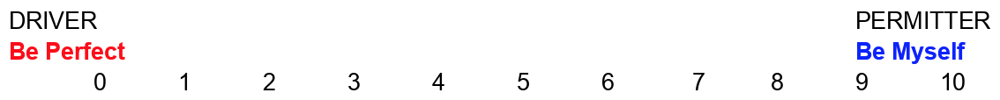

|
OMI'S ALGOS
Helping People Interpret and Use Human Data
|
Drivers and Permitters:
Becoming more assertive involves moving from drivers to permitters.
- DRIVERS
-
- Are negative, restrictive messages stating you’re not OK the way you are, and that your OKness is conditional on your meeting driver demands. The more we operate under the drivers, the more we feel compulsively bound to adhere to their demands.
- The 5 predominant drivers in out lives are:
- BE PERFECT
- PLEASE OTHERS
- TRY HARD
- HURRY UP
- BE STRONG
- Drivers create tension
- They put us into high gear
- A natural pace is not sufficient
- We must be better, faster, and if this is not achieved, we consider ourselves inadequate
- A driver is buoyed up be a forced motivation, a pressure from the imposed self that may have no connection at all to a person’s inner well of aliveness and energy
- PERMITTERS
-
- Permitters are specific permission that either prevent or relieve the effect of a driver. The more we operate by affirmers, the more we can freely choose to do things well, to please others, etc.
Drivers and Permitters:
Assessing Driver Behaviour
Using the following decision scales, access the drivers and their respective permitters. The more important the driver, (the more you adhere to its demands), the closer you will rate yourself toward the zero of the scale. Indicate where you see yourself now and where you were on the scale 5, 10, or 15 years ago. The difference represents your positive movement away from drivers (hopefully).

- I’m only OK if I am perfect
|
- I have a high degree of self-acceptance
|
- I must not fail or make mistakes
- I don’t try things if I might be criticized
- I try to cover all bases to avoid any negative reactions
|
- I enjoy trying new things and learn from my mistakes. I do the most important things to a high degree of excellence and do what is minimally acceptable on the least important priorities
|
- Caught on the grip of a Be Perfect - I constantly grade myself. One hundred percent perfect and I pass; anything less and I fail
- If I can’t do something right, I won’t do it at al
- I’m constantly pushed to perform at very high levels. To be less than perfect is to risk severe self-punishment
- I believe that without the driver I would slack off and be lazy. Worse yet, I would tell everyone off, become self-centered or vulnerable. (In actuality, without driver demands we generally accomplish more, become easier to live with and our self-respect increases
- I push and prod myself away from my natural pace
- I feel like rebelling or collapsing under such relentless pressure
|
- I give myself sufficient room for flexibility
- I provide myself with the direction that allows me to proceed forward with my goals and plans
- I nurture myself with statements like, “It’s okay - okay to relax, okay to take my time, okay not to finish it tonight.” “It’s okay to be human” and “It’s okay to make mistakes.”
|
- I’m not OK unless I am pleasing others. I feel responsible for making people feel good
|
- I respect myself. I have needs, too. I can say “No” when necessary
|
- I feel badly if others are not satisfied with my efforts
- I often feel obliged to say “yes” to others’ requests because I would feel guilty if I said “no”
|
- I choose freely when & how to respond to others
- When I take good care of myself, I want to respond to your needs
|
- Am only OK when other people like and approve of me. Losing this approval even for a moment can lead to high levels of anxiety and depression even when the disapproving person is unimportant
- I have intense fear of rejection
- With Please Other Driver, I have a difficult time asserting my own needs and feelings.I find it difficult to say “no” to the demands and requests of others
- Pushed by this Driver, I become exquisitely sensitive to the nuances of another’s emotional state, while remaining oblivious of my own
- I take on the drivers of the persons with whom I relate. I can easily get caught up in the Hurry UpBe Perfect Demands of those closest to me. This incorporation of the standards of others leads me even further away from my feelings
|
- “It’s OK to please myself.
- I consider my own feelings and needs
- I allow myself to pursue my own unique agenda. It does not mean that I will not also choose to please others. Pleasing another person will be a choice, one that takes my own feelings into consideration as well as the feelings of the other person
|
Helping professions are particularly vulnerable to the Try Hard Driver. Helping people in need, these people often ignore their own personal limits and tale on the problems of their clients as if these problems were their own. This leads to “burn out” where we end up with nothing left to give in terms of physical, emotional or intellectual energy.
- Life is a struggle, strain and often agonizing effort. I feel like a victim fighting against overwhelming odds. I often feel like I can’t make it.
- Nothing of value should come easy - so I end up making mountains out of molehills.
- I only feel OK when I’m struggling and giving myself a hard time.
- I feel pushed to take on more & more - more & more projects, more & more invitations, more & more responsibilities. I have great difficulty in setting appropriate limits.
- I pressure myself to accept a burden without concern for my emotional and physical limits.
- I often become a rescuer, taking responsibility for others and their problems
- Setting limits, even very appropriate ones, about how much help can be given or how much financial assistance can be supplied goes against my Try Hard dictate.
|
- It’s OK to succeed.
- Success isn’t dependent on struggling, straining and trying hard.
- It’s OK to work smarter and not harder.
- I don’t have to feel overwhelmed. I can take one step at a time. I can do it.
- I can set limits and follow my priorities. When I’m on purpose it’s effortless to work 12 hours. I enjoy success.
- “It’s OK to say no” and “it’s OK to succeed.”
- I can choose not to try hard. I can choose not to participate on five committees if I do not want to participate.
- I can recognize my own limits - in work, in friendship, and in intimate relationships.
- It’s OK to go ahead and do it - to make a success of my job, my friendships, or my intimate relationship, working in conjunction with other permitters, like “It’s OK to ask for the support I need in meeting my goal.” “It’s okay to acknowledge the real problems in my project,” and “It’s OK to set limits in other areas.” I no longer need to try hard. I can simply meet my commitments myself.
|
Society reinforces those who Hurry Up, setting short deadlines and meeting them is rewarded with promotions and acclaim. The cost of the overwork is frequently not experienced until later, when friends, family and important parts of one’s self have been discarded and left behind. Leads to generalizing a need for alertness and speed in one area to other situations where a broader degree of permission is possible.
- I’m not OK or comfortable unless I’m hurrying to get it done. If there isn’t a crisis, I create one.
|
- It’s OK to work smarter not harder. I set my own pace. I take this time and plan & set priorities.
|
- I’m so harried. I don;t have time to think. No time to relax and enjoy what I’m doing. Anyone that doesn’t see it the way I do is either lazy or disloyal.
|
- By taking time to reflect, I find new & creative solutions to difficult problems. I don’t have to rush to do the job.
|
- I feel pushed to do things quickly.
- I feel I must do more and more in less time.
- I feel trapped in impatience with myself and others.
- I never have enough time to do what I want.
- I feel I’m operating under an excessively competitive drive.
- I frequently make errors when I push past my capacity.
|
- It’s OK to relax and take my time.
- It’s OK to take the time I need to respond accurately.
|
The Be Strong command represents an accepted and admired way of behaving in our society - particularly for men. The Be Strong Driver is developed under circumstances where important others are severely critical of sadness and vulnerability.
- I’m only OK if I’m strong & tough.
|
- It’s OK to feel and express my feelings. I enjoy feeling strong & independent. But when I’m feeling vulnerable & need help, I can ask for it.
|
- I never let anyone know when I’m feeling unsure or vulnerable.
- If I’m breaking inside, the last thing I would do is to show it to anyone. I really can’t let anyone know what I’m feeling or wanting. I’m macho all the way.
- Certain needs and feelings are unacceptable, even despicable, for myself and others.
- I regard any need as a weakness to be overcome. Feelings of sadness, hurt, or loneliness are intolerable. The Be Strong Driver commands that I should be able to handle on my own all of the problems that come my way.
- I must do all myself. Hence, when I need help I am unable to ask for it. Needing help of any sort precipitates a drop in self-esteem.
|
- By demonstrating my openness to others. I make it easier for them to be real & straight with me. This included both positive and negative feelings.
- “It’s OK to have feelings and to express them”, i.e. hurt feelings, sad feelings. Soft feelings, tender feelings. My vulnerable feelings and needy feelings are acceptable. I have permission to express these feelings along with the “more acceptable” ones.
|
|